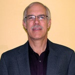

The Blue Heaven Crew
Bob Burkhead has been president of Blue Heaven Technologies since its foundation in July 2004. He has strong technical experience in research and development with patents and design awards. He has 35 years experience in air filtration product development and production activities, including 25 years spent with two major air filtration manufacturing firms. Bob remains heavily involved in Boy Scouts, is an avid UofL fan and is a closet environmentalist.
Connie Burkhead recently joined her husband Bob in the filtration industry. Previously her employment roles have varied, including human resources, accounting, administration and technology. As the mother of two and grandmother of four, family time is her favorite hobby, though she also enjoys boating, hiking, bicycling and UofL ball games.
Bobby Singer has been with Blue Heaven Technologies for nine years. Previously he was on staff with AFTL for 16 years, holds a CAFS certification, and has taken the University of Minnesota short course certification in Aerosol and Particle Measurement. Bobby enjoys playing basketball and volleyball and all things UofL.
Glen Toloczko has worked for Blue Heaven Technologies for 10 years. Previously he was on staff with Jordan Technologies for 12 years. Glen holds a CAFS certification from NAFA, short course certification from the University of Minnesota in Aerosol and Particle Measurement and Bioaerosol Measurement, CHE 454 EPA Air Testing Sampling Course, 40+ hours of OSHA safety training confined space entry training and EPA Method 9/Method 22 Visual Emission Certification. In his free time, Glen enjoys woodworking, cycling, science and technology.
Joe Koenig has been with Blue Heaven Technologies for four years. He holds a CAFS certificate, and enjoys fishing and motorcycle drag racing in his free time.
 Doug Pfeiffer has worked for Blue Heaven Technologies for eight years. Previously he was on staff with Jordan Technologies for almost seven years and AAF for 25 years. He holds a bachelor’s degree in Electrical Engineering from the University of Missouri at Rolla, holds a CAFS certification from NAFA, and has taken the University of Minnesota short course certification in Aerosol and Particle Measurement. In his free time, Doug enjoys walking, jogging and biking.
Doug Pfeiffer has worked for Blue Heaven Technologies for eight years. Previously he was on staff with Jordan Technologies for almost seven years and AAF for 25 years. He holds a bachelor’s degree in Electrical Engineering from the University of Missouri at Rolla, holds a CAFS certification from NAFA, and has taken the University of Minnesota short course certification in Aerosol and Particle Measurement. In his free time, Doug enjoys walking, jogging and biking.
Jack State has worked at Blue Heaven Technologies for four years. Previously he has worked at Air Filter Testing Laboratories (24 years), International Harvester (9 years) and the Kentucky Department of Highways (6 years). Jack holds a CAFS certificate from NAFA. In his free time, he enjoys fishing and choral singing.
 Dale Montgomery has more than 20 years of experience in air filtration testing, filtration product development, indoor air quality and building failure analysis. He holds a master’s degree in Mechanical Engineering from the University of Louisville, and is a licensed patent agent and registered professional engineer in North Carolina and Kentucky. Dale is a sailor living in Oriental, North Carolina.